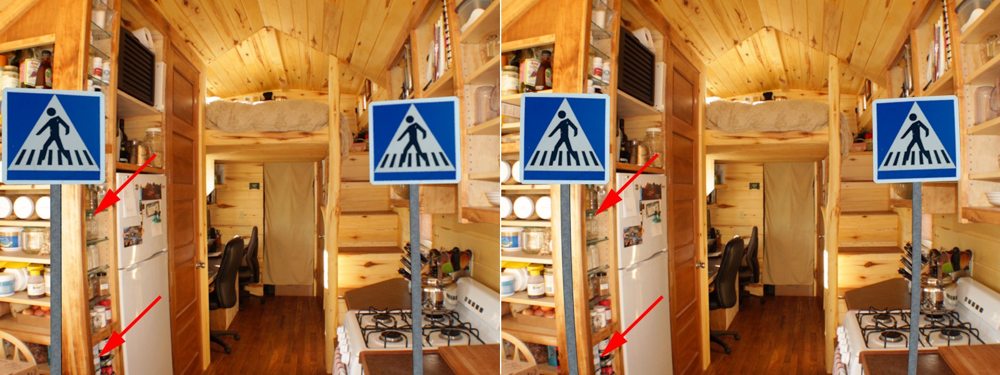
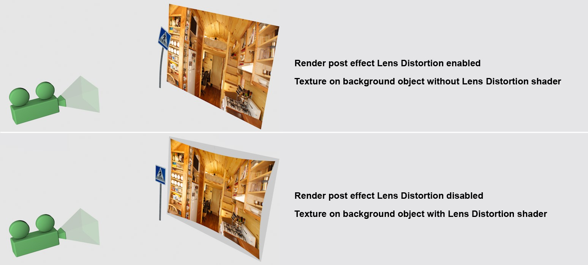
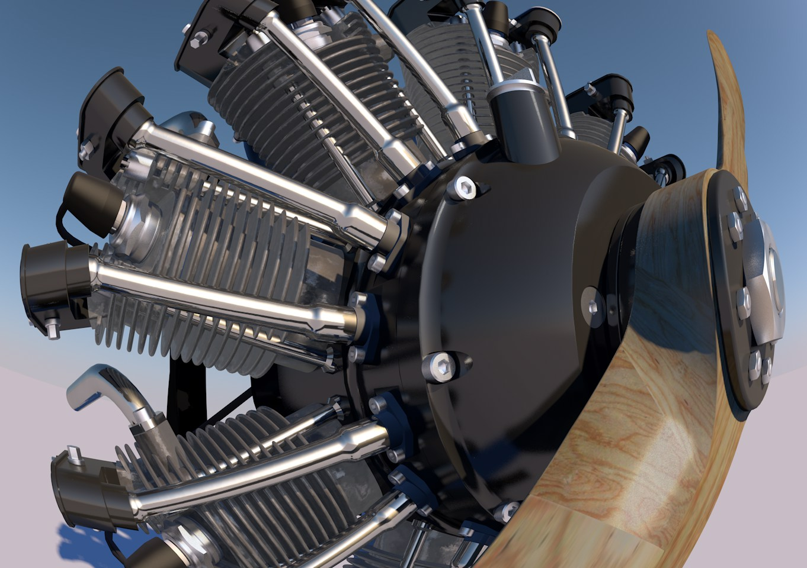

Function available in CINEMA 4D Studio
镜头失真
基本镜头失真
左图未开启镜头失真效果，右图开启。注意 3D 对象（如果你能分辨出的话）是如何变形的。
镜头失真效果（注意，这是一个真实渲染效果，虽然它被归类为后期效果）基于一个加载的镜头特征文件（另见与之相关的镜头失真工具）。在渲染时，所有 3D 对象会根据这个镜头特征文件进行变形，就像使用真实世界中的有镜头失真的摄像机拍摄的场景一样。
下图使用了镜头失真着色器：
如果启用了镜头失真效果，镜头失真着色器就会失效。反之亦然。
只有这样渲染的 3D 对象会匹配图像。背景对象会被镜头失真效果忽略。通常分配给它的图像中已经包含失真，这会使额外的失真变得多余。
提示：
注意，通过摄像机投射的纹理在此功能下可能会失效，因为在镜头失真效果下进行渲染时会看到位于摄像机投射范围之外的区域。
提示2：
如果你想要鱼眼效果，用这个着色器可以实现。创建一个虚拟的镜头特征文件（
镜头失真模型 3DE Radial Fisheye Degree 8，高
Quartic 和
Quadratic 值）并加载它：
模型：Steen Winther
当然，不一定需要通过创建虚拟镜头特征文件。如果使用带有鱼眼的镜头失真工具来产生尽可能真实的镜头失真，你会得到一个相当不错的鱼眼效果。